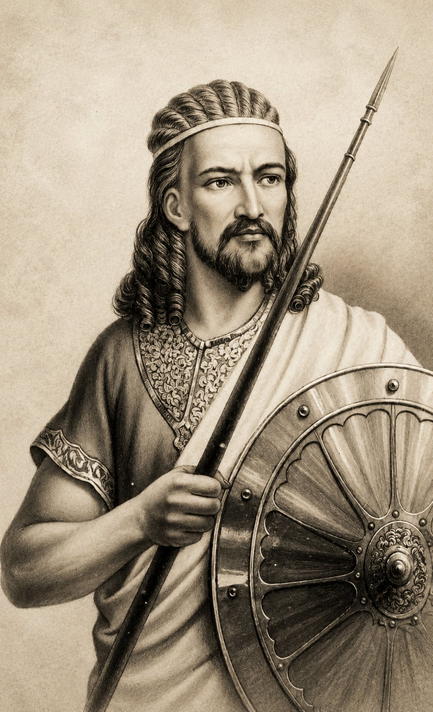
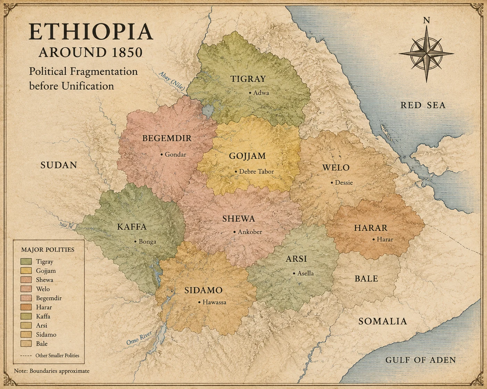
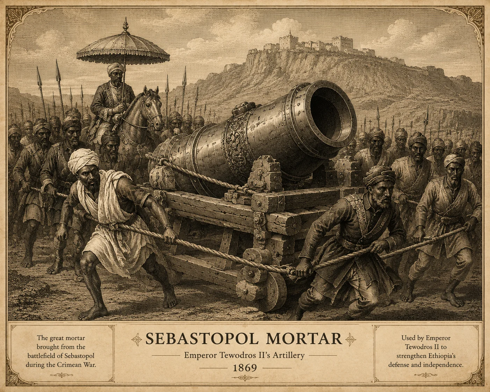
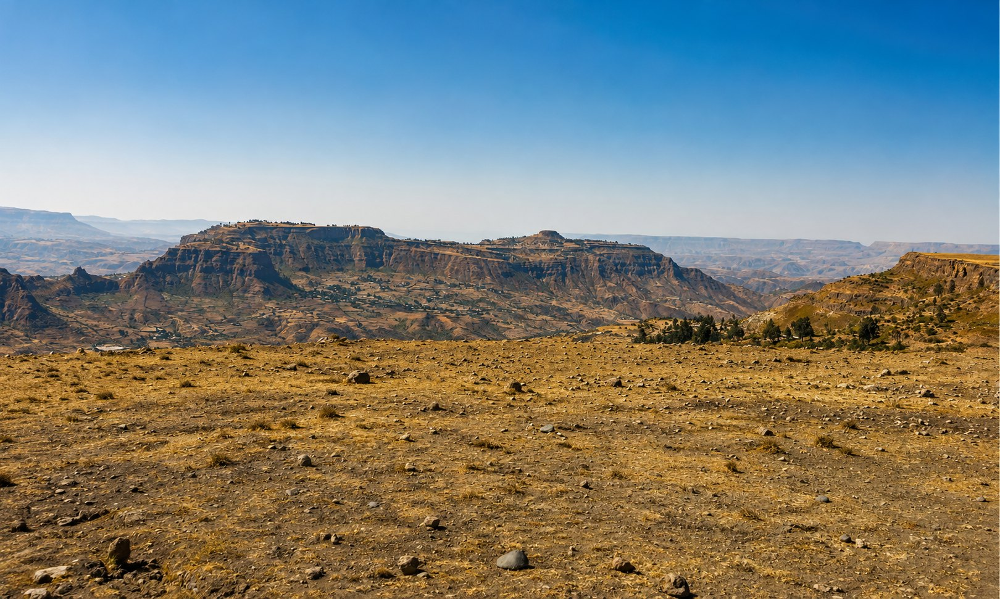

01
Centralize
Draw provincial power back to the throne: a salaried national army, taxes paid to the state, and governors answerable to the emperor.

01 / The Context
For much of the eighteenth and early nineteenth centuries, Ethiopia lived through the Zämänä Mäsafənt — the Era of Princes. The emperor in Gondar remained a symbol, while real power was held by regional lords who fought one another for territory, tribute and influence.
Provincial armies moved across the highlands, alliances shifted with the seasons, and the church itself was divided by doctrinal disputes. Trade routes were insecure and central institutions had little reach beyond a lord's own province.
It was into this fragmented landscape that a provincial commander named Kassa Hailu rose — and set out to make the imperial crown mean something again.
02 / The Rise
1855
Kassa Hailu becomes Tewodros II
Born in Qwara around 1818, Kassa Hailu grew up on a frontier where authority was won in the field rather than inherited at court. He learned command early, gathering a disciplined following and a reputation for personal austerity.
Through a series of campaigns, Kassa defeated major regional rivals and gradually extended his authority across much of the northern and central highlands. His rise marked a decisive challenge to the regional political order of the Era of Princes.
In 1855 he was crowned as Tewodros II, taking a throne name tied to popular prophecy about a righteous king who would restore the kingdom and rule justly. It was a claim of destiny as much as a title.
The central idea
Tewodros sought to strengthen imperial authority and bring Ethiopia's fragmented political landscape under a more centralized state. He worked toward a state army, tighter taxation, stronger provincial administration and authority that answered to the crown rather than independent regional lords.
The phrase describes an ambition, not a fully achieved political reality. Resistance remained a defining feature of his reign.


03 / The Reformer
01
Draw provincial power back to the throne: a salaried national army, taxes paid to the state, and governors answerable to the emperor.
02
Reshape institutions and rule — restrain the trade in enslaved people, curb the independent power of great landholders, and press the church toward unity.
03
Seek new technology and skills, from firearms and artillery casting to European craftsmen and engineers brought into imperial service.
04 / Diplomacy
On 29 October 1862 Tewodros wrote to Queen Victoria as a fellow Christian monarch. He sought British friendship and assistance, including military training and access to skills and technology that he believed could strengthen Ethiopia. The Foreign Office failed to pass the letter to the Queen.
The failure to receive a reply deepened Tewodros's anger. In 1864 he imprisoned the British consul Charles Duncan Cameron and other Europeans, turning a diplomatic dispute into an international crisis that eventually led to the British expedition.
1862
To Queen Victoria
God created me, lifted me out of the dust, and restored this Empire to my rule.
05 / Timeline

The final chapter
Maqdala
13 April 1868
Photo: Asrade / Wikimedia Commons — CC BY-SA 4.0; adapted for this project
In 1867 Britain despatched an expeditionary force under Sir Robert Napier to free the hostages. It landed on the Red Sea coast and marched hundreds of kilometres into the highlands, building roads as it advanced.
On 10 April 1868, on the plain of Aroge below the plateau, Tewodros's forces met the British expedition's modern artillery and rockets. The engagement ended in a decisive British victory.
Three days later the fortress of Maqdala was stormed. Tewodros released the hostages but refused to surrender himself, and took his own life rather than be taken prisoner.
The fortress was destroyed by military order on 17 April. A vast quantity of Ethiopian cultural material — manuscripts, crosses, tabots, textiles, royal regalia and weapons — was carried away. Much of it entered European museums and private collections, where a great deal of it remains.
“God created me, lifted me out of the dust, and restored this Empire to my rule.”
— Tewodros II, letter to Queen Victoria, 1862
06 / Legacy
Tewodros II is remembered less for what he completed than for what he attempted. He is widely treated as the beginning of modern Ethiopian statehood — and his reign is also a record of coercion, revolt and catastrophic confrontation. Both belong in the same account.
07 / Heritage
ኢትዮጵያ
The story of Maqdala did not end in 1868. It continued in the objects taken from it: illuminated Ge'ez manuscripts, processional and hand crosses, tabots, chalices, woven and embroidered textiles, jewellery, royal garments and arms — now catalogued in museum collections far from the highlands where they were made.
For Ethiopians, these are not artefacts of a foreign campaign but the material memory of a church, a court and a people. That is why the Maqdala collections sit at the centre of long-running conversations about restitution, custodianship and access.
A tribute to Tewodros II is therefore also a tribute to what survived him — and a reminder that heritage is not only inherited, but contested and cared for.